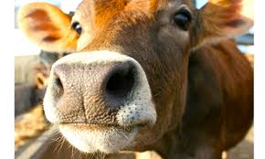
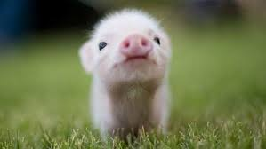
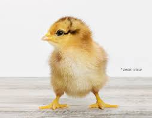

Vegan Fun Facts
"I choose not to make a graveyard of my body for the rotting corpses of dead animals."
George Bernard Shaw
- It takes more than 2,500 gallons of water to produce 1 pound of beef, while producing 1 pound of tofu only requires 244 gallons of water. By going vegan, one person can save approximately 219,000 gallons of water a year.
- In every large, peer reviewed study to date, vegans have shown better overall health compared to omnivores.
- Eating plant-based foods, which are rich in vitamin E, vitamin B6, folic acid and other nutrients, can reduce your risk of developing Alzheimer’s by as much as 70%.
- Since vegans eat no animals, each vegan saves nearly 200 animals per year.
- The twenty-year "China Study" found that countries that ate primarily vegetarian were healthier than those who had meat-based eating practices.
| Animal Type |
Number Killed Daily |
Number Killed Weekly |
Number Killed Monthly |
Number Killed Yearly |
| Cows |
90,027 |
631,890 |
3 million |
41 million |
| Chickens |
27 million |
190 million |
750 million |
9 billion |
| Pigs |
346,901 |
2.4 million |
9.7 million |
116 million |


